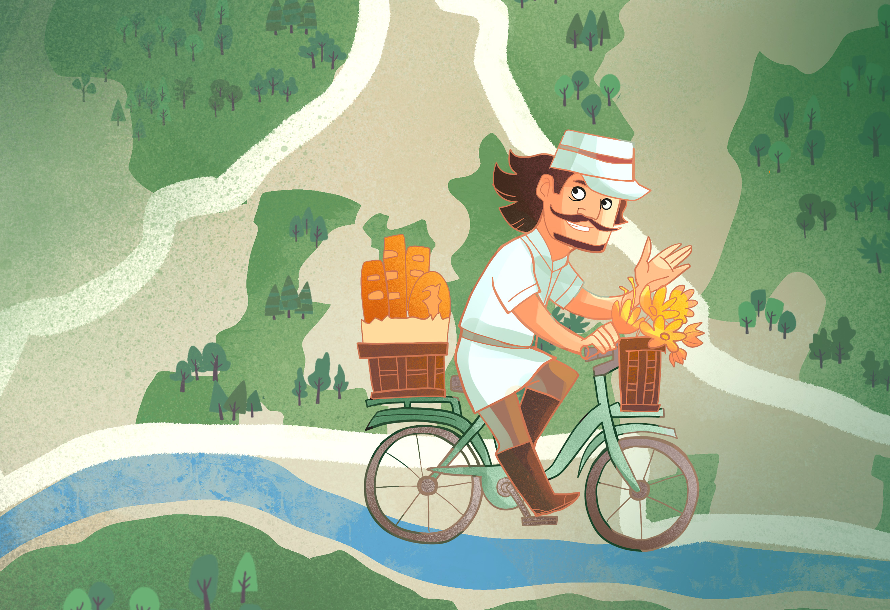
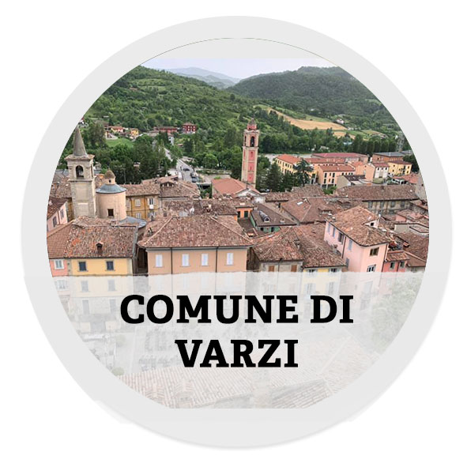
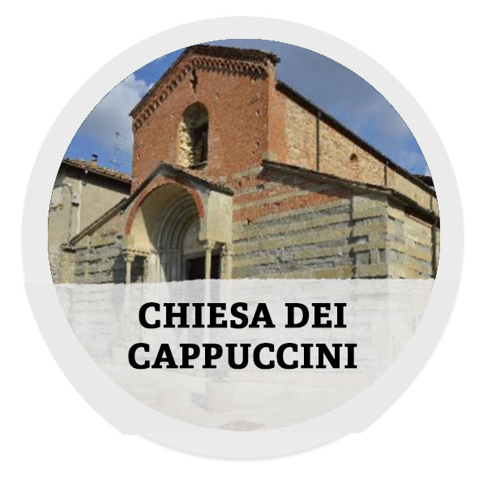
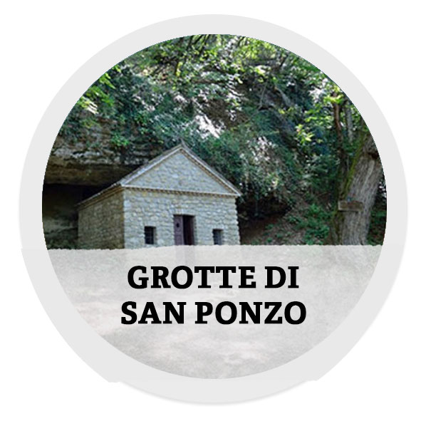
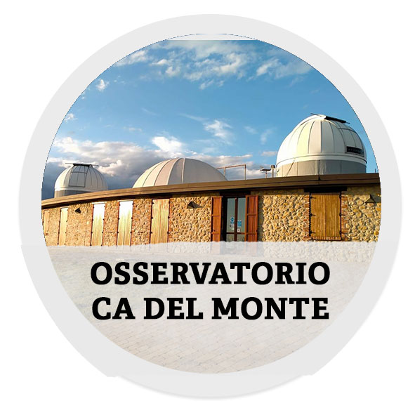
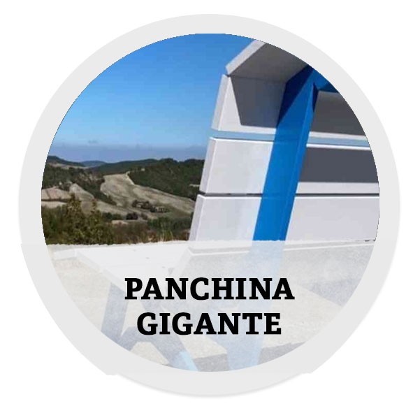
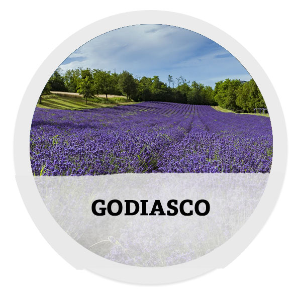
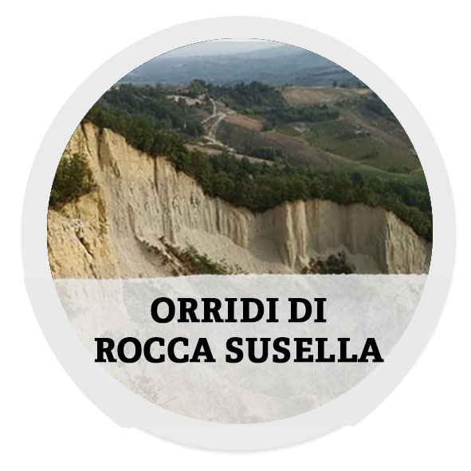
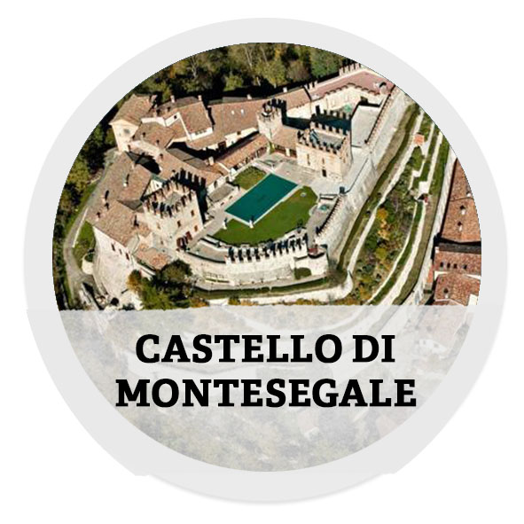
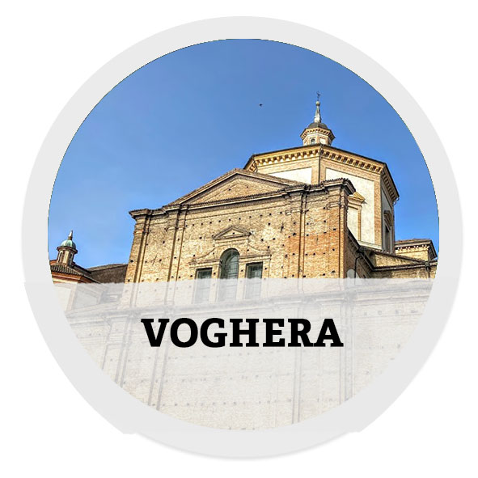

Oltrepo Game
Pedala lungo la Greenway Voghera-Varzi

Scopri tutte le attivitá che puoi fare lungo il percorso. Fai tappa nei borghi piu' belli della Valle Staffora

1 - Visitare il comune di Varzi
Annoverato tra i "Borghi più belli d'Italia", il centro storico di Varzi è di interesse storico e artistico. Tra i luoghi da visitare: palazzo Tamburelli, sede del Municipio; il Castello Malaspina con la torre “delle Streghe”, la via di Dentro, passando per le porta Sottana e porta Soprana (torre dell’orologio); la Chiesa dei Rossi; la chiesa di San Germano; la chiesa dei Cappuccini..

2 - Pregare nella Chiesa dei Cappuccini
La chiesa dei Cappuccini, dedicata a San Germano, è una delle più antiche della valle Staffora, costruita alla fine del XII secolo, viene recuperata nel 1623 dagli stessi frati, che edificarono anche un convento. Ha con una facciata in cotto e pietra, impreziosita nel tempo da pregevoli affreschi.

3 - Esplorare le grotte di San Ponzo
Due famose grotte si trovano a San Ponzo Semola (Ponte Nizza), formatesi dalle infiltrazioni d'acqua. Qui nel III secolo d.c. vivema il santo eremita: la leggenda narra che l'acqua che sorgeva da una delle grotte, fosse miracolosa; per questo venno costruito un piccolo oratorio (luogo di preghiera).

4 - Osservare le stelle a Cecima
Presso il comuen di Cecima, località Ca' del Monte, si trova l’Osservatorio Astronomico “G. Giacomotti”. Molte sono le attività culturali qui promosse in occasione di visite ed eventi: osservazioni al telescopio; proiezioni al Planetario Digistar; passeggiate notturne; laboratori ludico- scientific; concerti e spettacoli in anfiteatro.

5 - Sedersi su una panchina gigante
Nel territorio dell'Oltrepò Pavese sono dislocate le Big Bench(es): panchine giganti pensate per ammirare il panorama. Veri e prori landmark, hanno il potere di far sentire "bambini" gli adulti che si fermano per osservare il paesaggio. Si trovano nei sguenti comuni:Retorbido; Codevilla; Calvignano; Casteggio; Gomo; Montalto; Mornico Losana; Poggio Ferrato; Retorbido; Romagnese.

6 - Sentire il profumo della lavanda
Il borgo ha impianto medioevale; visibili i resti delle torri delle mura del XIII secolo. Tra gli edifici di interesse storico: Palazzo Malaspina, all'interno del quale si trova un porticato dotato di un pozzo cinquecentesco in pietra. Nei dintorni le colline dove note sono le tipiche coltivazioni di lavanda.

7 - Ammirare gli orridi di Rocca Susella
In valle Ardivestra, a pochi chilometri da Godiasco, nel comune di Rocca Susella, si trova una pieve romanica, edificata intorno alla metà del XII secolo, poi abbondanata per secoli, è stata recuperata nel 1900. Facciata e controfacciata sono decorate con fasce alternate di arenaria e laterizi.

8 - Conquistare il castello di Montesegale
Borgo edificato tra il XII e il XIII secolo in valle Ardivestra, riconoscibile dalla cinta muraria merlata e torri quadrate. Trasformato in residenza signorile nel '600, oggi ospita eventi culturali. Tipica del borgo è l'antichissima ricetta del Pansegale - prodotto De. Co., arricchito di frutta secca (noci, mandorle, nocciole e fichi secchi), realizzato con impasto di lievito madre.

9 - Visitare il comune di Voghera
"Iria" per i Romani, "Vicus Iriae", poi Viqueria e Voqueria dal Medioevo. Il centro di Voghera si contraddistingue per di interesse storico: la cattedrale del Duomo di San Lorenzo del 1605; il Castello Visconteo del 1372; la chiesa barocca di San Giuseppe; il Museo Storico di Voghera e il Museo Civico di Scienze Naturali.